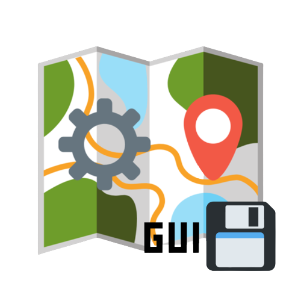

Liste des plugins disponibles

Save map from automap GUI
Commande pour l'installer :
plugin install save_map_from_automap_gui
Better Settings
Commande pour l'installer :
plugin install better_settings
Automap - Projet réalisé par Luckyluka17.
Propulsé par